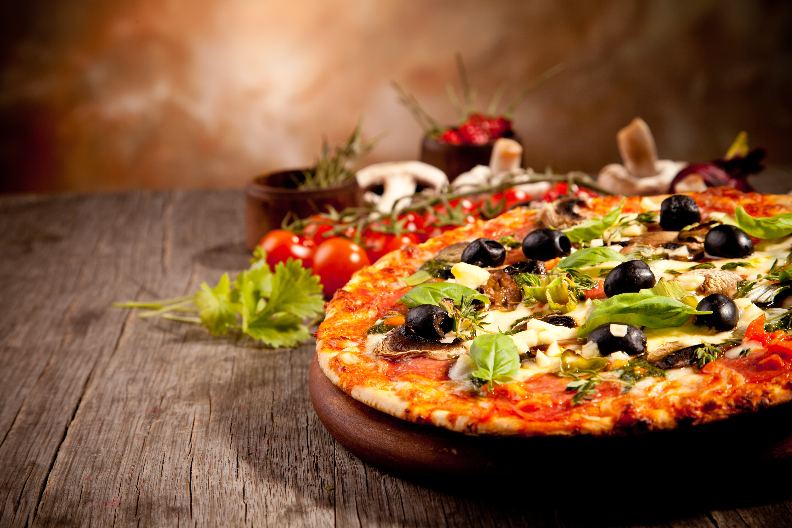
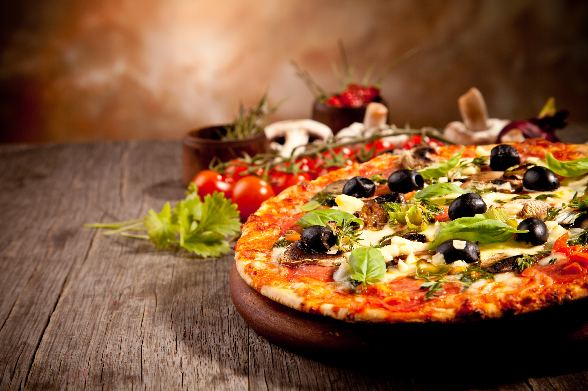
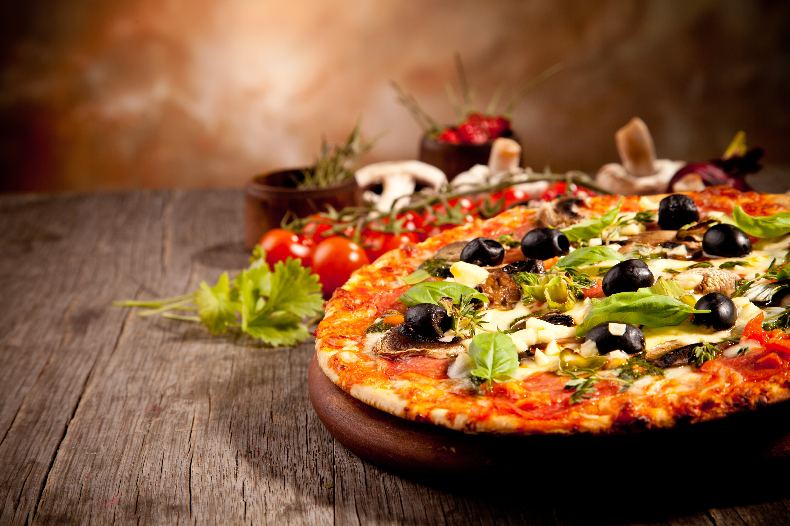

Food is any substance consumed by an organism for nutritional support. Food is usually of plant, animal, or fungal origin, and contains essential nutrients, such as carbohydrates, fats, proteins, vitamins, or minerals. The substance is ingested by an organism and assimilated by the organism's cells to provide energy, maintain life, or stimulate growth. Different species of animals have different feeding behaviours that satisfy the needs of their metabolisms that have evolved to fill a specific ecological niche within specific geographical contexts. Omnivorous humans are highly adaptable and have adapted to obtain food in many different ecosystems. The majority of the food energy required is supplied by the industrial food industry, which produces food with intensive agriculture and distributes it through complex food processing and food distribution systems. This system of conventional agriculture relies heavily on fossil fuels, which means that the food and agricultural system is one of the major contributors to climate change, accountable for as much as 37% of total greenhouse gas emissions. The food system has significant impacts on a wide range of other social and political issues including: sustainability, biological diversity, economics, population growth, water supply, and food security. Food safety and security are monitored by international agencies like the International Association for Food Protection, World Resources Institute, World Food Programme, Food and Agriculture Organization, and International Food Information Council.
Food is any substance consumed to provide nutritional support and energy to an organism. It can be raw, processed or formulated and is consumed orally by animals for growth, health or pleasure. Food is mainly composed of water, lipids, proteins and carbohydrates. Minerals (e.g. salts) and organic substances (e.g. vitamins) can also be found in food.Plants, algae and some microorganisms use photosynthesis to make their own food molecules. Water is found in many foods and has been defined as a food by itself. Water and fiber have low energy densities, or calories, while fat is the most energy dense component. Some inorganic (non-food) elements are also essential for plant and animal functioning. Human food can be classified in various ways, either by related content or by how the food is processed. The number and composition of food groups can vary. Most systems include four basic groups that describe their origin and relative nutritional function: Vegetables and Fruit, Cereals and Bread, Dairy, and Meat. Studies that look into diet quality group food into whole grains/cereals, refined grains/cereals, vegetables, fruits, nuts, legumes, eggs, dairy products, fish, red meat, processed meat, and sugar-sweetened beverages. The Food and Agriculture Organization and World Health Organization use a system with nineteen food classifications: cereals, roots, pulses and nuts, milk, eggs, fish and shellfish, meat, insects, vegetables, fruits, fats and oils, sweets and sugars, spices and condiments, beverages, foods for nutritional uses, food additives, composite dishes and savoury snacks.
